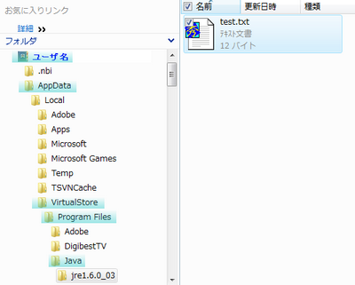
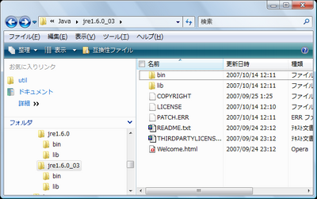
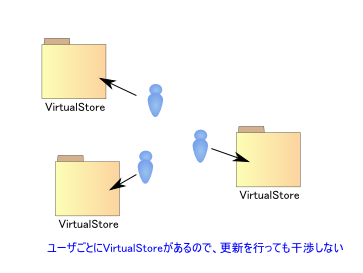
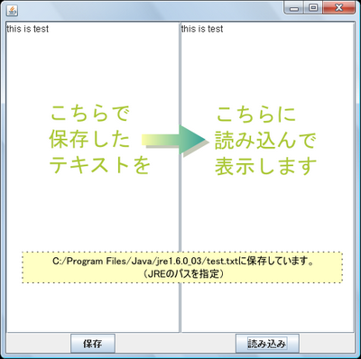
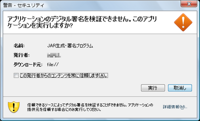
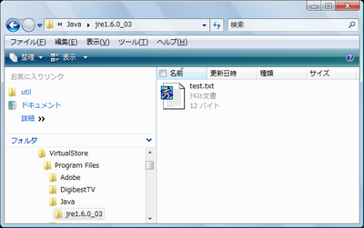
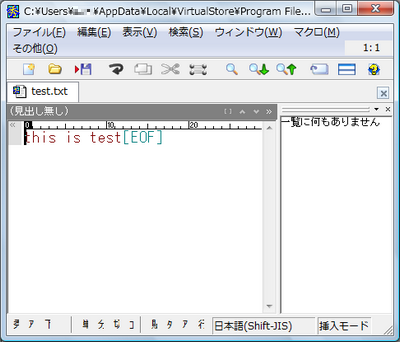
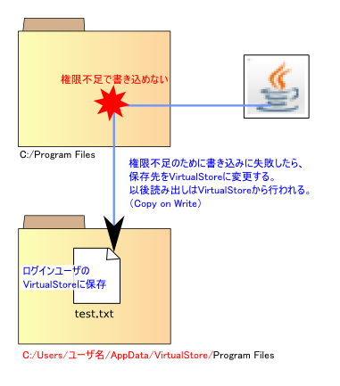

株式会社 アイプランニング
Towa Edogawabashi building 8F
Yamabuki-cho 347
Shinjuku-ku Tokyo
Phone: 03-5225-1147
VistaやWindows７ではUACにより、セキュリティの向上が図られました。それに伴いファイルシステムなどで仕様変更があり、一部のソフトウェアで互換性が失われています。
今回は、Vistaでも今までのJavaアプリケーションが問題なく使えるのかどうかを探ってみたいと思います。
§１．UAC（ユーザー・アカウント制御）
WindowsVistaで導入された、管理者権限の必要な操作に対して警告を行いOSを保護する機能。具体的には操作ミスによるシステムファイルの変更や削除、ウイルスによるプログラムの自動インストールなどを実行時に防ぐことができる。
VistaではUACの追加などにより、XPに比べてセキュリティの向上が図られましたが、それに伴いファイルシステムなどで仕様変更がなされ、過去のアプリケーションが正常に動作しない、などのトラブルが起こっています。Javaアプリケーションに関しては、基本的に新しいJREを使っていればVistaでも問題なく動くと考えていいのですが、プログラムの作り方によっては、期待した動作をしないこともありえます。
§２．JavaOnVistaチェックリスト
以下の項目に当てはまるJavaアプリケーションは、Vista,Windows7で期待した動作を行えない可能性があります。
■Program Files下にファイルを書き込んでいる。
UACにより、ファイルの仮想化が行われます。
■ドライブルートにファイルを書き込んでいる。
ドライブルート（たとえば、c:\直下）にはファイルが書き込めなくなりました。
■使用するJREのバージョンが1.4で、GUIにSwingを使っている。
Swing使用時にVista Basic表示に強制変更されます。
■漢字字体が変更になると困る。（例：人名を扱う）
「巷」「鯖」などの字体が変更になっています。
■第三水準漢字を使う可能性がある。
Vistaで使える漢字のうち、XPでは表示できないものがあります。
§３．Vista,Windows7移行時のポイント
UACについて
プログラムのデフォルト実行権限が「一般ユーザ」になります。
たとえ管理者でログインしていても、特別な指定をしない限り「一般ユーザ」で実行されます。
「一般ユーザ」は、Program Files, ProgramData, SystemRootなどへのファイルの書き込みが制限されています。
Program Files下にプログラム以外の、iniなどの更新を前提とした設定ファイルを置くことは、XP時代から非推奨でしたが、Vistaではセキュリティの強化およびマルチユーザ環境に配慮し、一般ユーザ権限では書き込み自体が行えないようになりました。
しかし、XP時代のプログラムの中には、Program Files下に設定ファイルを置く設定になっているプログラムも多く、そのようなプログラムはVistaでは正常に動作できません。
そのためVistaでは、XPとの互換性確保のため、一般ユーザ権限で
・Program Files
・ProgramData
・SystemRoot
にファイルを書き込むと、VirtualStoreフォルダ下に「仮想化」が行われます。
例）
Program Files下にtest.txtを作成したところ、VirtualStore下の仮想化されたProgram Filesにtest.txtが作成される。
VirtualStore作成された後にファイルアクセスがあった場合、VirtualStore下にリダイレクトされる。

以下は、仮想化が行われているフォルダを表示しています。

仮想化が行われているフォルダでは、
「互換性ファイル」のアイコンが表示されます。
このアイコンをクリックすると、リダイレクト先フォルダを参照することができます。
この仮想化機能により、特定ユーザがProgram Filesに変更を加えても、他のユーザに影響を及ぼすことはなくなります。
XPまではユーザ全体に変更を及ぼしていたProgram Files下のファイル操作が、Vistaではユーザ別にしか変更が起こらないことに注意してください。

なお、このVirtualStoreは過去のソフトウェア資産をVistaで動作させるための措置であり、
今後はProgram Filesにiniなどの更新を前提としたファイルを置くことは推奨されません。
設定ファイルはユーザのホームディレクトリに保存するようにしましょう。
フォントについて
XPのクライアントと、Vistaのクライアントが混在するようなシステムでは、文字コードに関係する問題が発生する可能性があります。
XP時代はCP932をサポートしていましたが、Vistaでは新たにJIS X 0213をサポートします。
変更点としては、字体の訂正と文字の追加です。
変更・追加のあった文字をVistaクライアントで入力し、XPクライアントで参照するようなときに、いわゆる「文字化け」が発生するおそれがあります。
詳しくはITproの記事を参照してください。
■ITpro - Vista文字セット問題
http://itpro.nikkeibp.co.jp/article/COLUMN/20080205/293111/?ST=vista
古いJREをVistaで動かす際の注意点
・Swing使用時に、Basic表示に強制変更される古いバージョンのJREを使うと、AeroがオフにされVista Basic表示に強制的に切り替えられることがあります。
起動時に、Aeroが自動的にオフにされ、ダイアログが表示されます。
この問題は、新しいバージョンのJREをインストールすることで解決します。
※手持ちの環境がVista Basicのため、この問題は検証できていませんが、少なくとも最新のJRE 5, JRE 6では正常動作しているようです。
（参考：KazzzのJとNのはざまで - Java on Vista）
§３．JavaアプリケーションのVista,Windows7移行 検証編
以下のような、簡単なSwingアプリケーションを作成し、Java Web Start経由で実行しました。
※コンパイルした環境はJDK5互換, 実行環境はJRE6です。
左ペインに入力したテキストをファイルに保存し、右ペインで保存したテキストファイルを読み込みます。

保存・読み込み先は
"C:/Program Files/Java/jre1.6.0_03/test.txt"
としています。
このディレクトリは、java.homeプロパティに定義されているもの、
つまりProgram Files下のJREのフォルダです。
Program Files下に手っ取り早くアクセスさせるためjava.homeに保存しています。

実行したアプリケーションが、無制限のリソースアクセスを要求していたので
まずアプリケーションの提供元を信頼するかどうかのダイアログが出ます。
これはJava VMが表示したものです。
もともとXP環境でもこういうダイアログは出ますので、このあたりは、Vistaでも変わっていません。
では、署名を信頼してアプリケーションを実行してみます。
作成したJavaアプリケーションから、
"C:/Program Files/Java/jre1.6.0_03/test.txt"に"this is test"の文字列を保存しました。
実際にProgram Files下にファイルが保存されているか見に行ってみましょう。
指定した保存先を開いてみましたが、保存したはずのtest.txtはありませんでした。
その代わり、
このような「互換性ファイル」というアイコンが見えます。
このアイコンをクリックしますと、別のフォルダに移動します。

VirtualStoreという見慣れないフォルダ下に移動し、
そこにtest.txtだけが置かれています。

test.txtを開くと、確かに保存されています。
どこのディレクトリに保存されたのかを詳しく見てみましょう。
今回の場合、
C:/Program Files/Java/jre1.6.0_03/test.txt
に保存したつもりが、
C:/Users/ユーザ名/AppData/VirtualStore/Program Files/Java/jre1.6.0_03/test.txt
に保存されています。
Vistaでは、Program Filesへの書き込みを原則として禁じています。
そのため、iniファイルなどのProgram Filesに置く設定になっている、XP時代の「行儀の悪い」ソフトウェアは動作しなくなってしまいます。
そこで、VistaではProgram Filesへの書き込みを、ユーザフォルダへのリダイレクトという形で解決しています。

このため、今回テストに用いたアプリケーションを別のアカウントから起動し、test.txtを読み込む動作をすると、「ファイルがない」と怒られます。
保存したtest.txtは、以前ログインしていたユーザフォルダのVirtualStoreにしかないためです。
Program Files内のiniを更新しても、ログインユーザのVirtualStoreにしか変更が及ばず、別ユーザでは変更が適用されていないというようなことが起こりえます。
たとえば、ゲームのハイスコアといったような、
全ユーザから参照したい設定ファイルは、
%allusersprofile%下に保存することが推奨されます。
参考：MSDNのVistaUACに関するドキュメント
§４．JavaアプリケーションのVista,Windows7移行 まとめ
VistaでJAVAを使うにあたって、まずJREのバージョンを最新にしておくことが大事と言えるでしょう。
Vistaに関連した不具合も多くFIXされています。修正内容に関してはリリースノートを参照してください。
J2SE1.4.2
J2SE5.0
JavaSE6
特にトラブルが発生すると考えられるのが、UACによる仮想化です。
UACを無効にして使う方法もありますが、VistaでのUAC機能は有用な機能なので、できる限り有効にしておきましょう。
ソフトを新規に開発する際においては、MSDNのVistaUACに関するドキュメントが参考になると思います。
どのタイミングでVistaに移行するかは難しいところかと思われますが、セキュリティを意識させられるという点で、勉強になるOSです。
個人的にWindowsPC導入を考えられている方は、メモリさえあればVistaにしておくのがいいでしょうね。
アイプランニング技術情報
技術情報TOPページ
プログラマ募集中・・・
お客さまの立場に立ってモノが作れる判断力、企画力、コンサルティング能力を磨きたくはありませんか？プログラム能力は、プロジェクトを通じて自然と能力があがるようなシステムになっています。初心者プログラマであっても３年程度で、その能力は初心者だったとは思えないくらいのスキルとなっています。
これは、「最初は誰でも初心者だ」という教育方針があるため、また、多くの社員が入社して初めてプログラミングにふれたという経験があるために自分のつまづき体験や、成功体験を含めた教育がなされているからなのです。
このようにアイプランニングでは、社員１人ひとりの個性と人間性を重視し、スキルにあったマンツーマン教育であなたを一人前のエンジニアへと成長させていきます。 それは誠実なスタッフが集まっているからこそ、どんなお客様からも信頼される企業に成長できるから。私たちはそう考えています。
プログラマを目指して会社に入ったものの、思った通りの仕事をさせてもらえなかったと思っている人、教育システムが十分でなかったためにスキルが身に付いていないと思っている人も気軽にご応募ください。パソコンのスキルに自信のない方でも、マンツーマンの研修制度で一人前に成長できるフィールドを整えておりますので安心してご応募くださいね。
知識だけでなく本当の開発力が身につく環境でのシステム開発でみつかる『やりがい』はもちろん、プライベートでも今までになかった充実感が得られますよ。